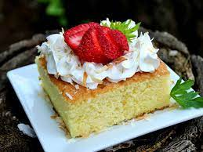

Tres Leches Cake

Description
Pastel de tres leches is a sponge cake that's steeped in three kinds of milk: condensed, evaporated, and heavy cream.
The soaked cake is served with whipped cream and sliced fresh strawberries. Store any leftovers in the refrigerator.
Ingredients
Cake:
- 6 medium eggs, separated
- 1 cup white sugar
- 1 cup all-purpose flour
- 1/2 cup milk
- 1 tablespoon baking powder
- 2 teaspoons vanilla extract
Tres Leches:
- 1 (14 ounce) can sweetened condensed milk
- 1 (12 ounce) can evaporated milk
- 1 cup heavy whipping cream
For Serving:
- 1 cup whipped cream (Optional)
- 1 cup sliced fresh strawberries (Optional... but they shouldn't be!)
Directions
- Preheat the oven to 350 degrees F (175 degrees C). Grease a 10x15 inch baking dish.
- Make the cake: Beat egg whites in a large mixing bowl with an electric mixer on high speed until stiff peaks form. Gradually beat in sugar until mixture is glossy. Beat in egg yolks, one at a time, beating well after each addition. Reduce the speed to medium and mix in flour, about 1 tablespoon at a time. Mix in milk, baking powder, and vanilla. Pour batter into the prepped baking dish.
- Bake until lightly browned on top and a toothpick in the center comes out clean, about 25 minutes. Remove from the oven and let cool for 15 minutes.
- Make tres leches: Combine condensed milk, evaporated milk, and cream in a blender. Pulse several times until well blended.
- Pour tres leches over cake. Cover and refrigerate until cake is cold and all liquid has been absorbed at least 1 hour.
- Cut chilled cake into 12 squares. Top each serving with a dollop of whipped cream and a few sliced strawberries.